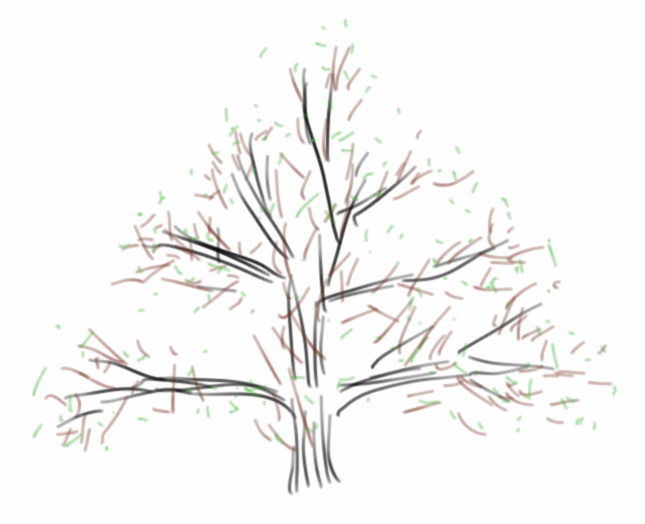
Trees
Ich liebe Bäume. In meinem Garten habe ich ein paar Kirschbäume, einen Maulbeerbaum, einen Mispelbaum, natürlich ein paar Äpfelbäume, einen kleinen Pfirsich-, und einen Feigenbaum, der jetzt schon drei Winter überlebt hat. Aber da das hier kein Buch für Hobbygärtner ist sondern für angehende Algorithmiker, geht es in diesem Kapitel um die Datenstruktur Baum, auf Englisch Tree.
Bei Trees handelt es sich um eine hierarchische Datenstruktur, die wenn man sie ausdruckt etwas an Bäume erinnert, daher der Name. So wie es bei richtigen Bäumen ganz viele Arten von Bäumen gibt, ist das auch bei der Datenstruktur, da gibt es BinaryTrees, QuadTrees, Splay Trees, Red-Black Trees, usw. Und je nachdem welches Obst man essen möchte muss man auch die richtige Baumart auswählen. Darum geht es in diesem Kapitel, um das Hegen und Pflegen von Bäumen.
.
Examples
Beginnen wir mit ein paar Beispielen: die Dateien und Verzeichnisse auf unserem Computer sind ein Baum. Wenn wir unsere Erde in Kontinente, Staaten, Bundesländer, usw. unterteilen, dann ist das auch ein Baum. Oder z.B. die Züge in einem Spiel, wie z.B. Tic-Tac-Toe, bilden auch eine Baumstruktur:
| 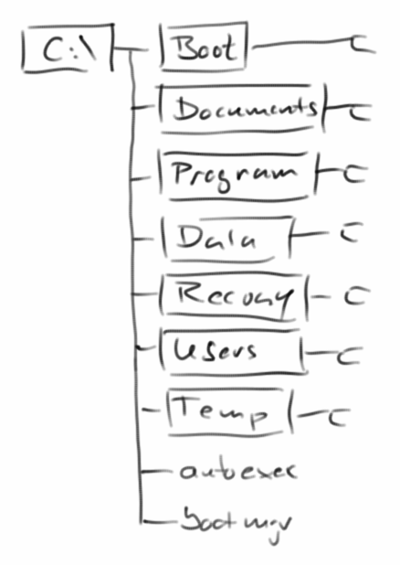 | 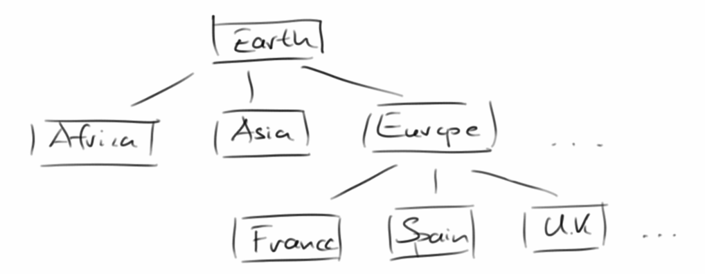 |
 |
Es gibt noch viele weitere Beispiele:
- Familienbäume, also gemeint sind Stammbäume.
- Ein Buch bestehend aus Titel, Inhaltsverzeichnis, Kapiteln, Unterkapiteln und Paragraphen.
- Entscheidungsbäume, basierend auf mehreren konsekutiven Ja/Nein Fragen kann man eine Entscheidung oder Diagnose treffen.
- Mathematische arithmetische Ausdrücke haben eine Baumstruktur.
- Und viele Spiele lassen sich in eine Baumstruktur abbilden.
Allerdings nicht alles was wie ein Baum aussieht ist wirklich ein Baum, deswegen wollen wir erst einmal definieren, was wir unter einem Baum verstehen.
.
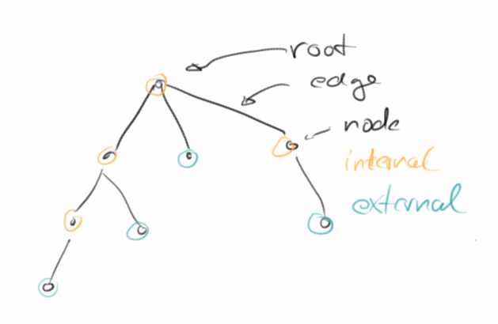Terminology
Ein Baum ist wie eine Eltern-Kind Beziehung. Dabei kann das Elternteil mehrere Kinder haben, aber ein Kind kann nie mehr als ein Elternteil haben. Das mag etwas ungewöhnlich erscheinen, aber so ist die Definition.
Ein Baum besteht aus Knoten, Nodes genannt, und Verbindungen, die man Edges nennt. Des weiteren verwendet man folgende Begriffe:
- Root: die Wurzel ist der Knoten der kein Elternteil hat. In jedem Baum kann es nur ein Wurzel geben.
- Internal Node: das sind Knoten die selbst Kinder haben.
- External Node (Leaf): das sind Knoten die keine Kinder haben.
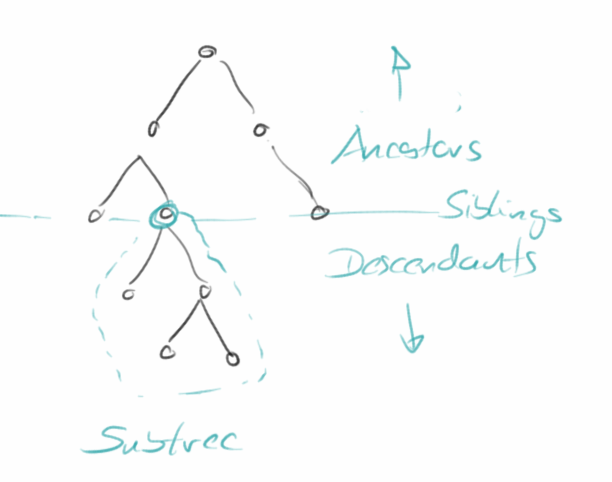In Anlehnung an Familienbäume, werden dann auch die folgenden Bezeichnungen verwendet:
- Ancestors: sind die Vorfahren.
- Descendants: sind die Nachfahren, also Kinder und Kinderskinder.
- Siblings: nennt man die Geschwister eines Knotens.
- Subtree: ein Unterbaum oder Teilbaum, ist ein Teil eines größeren Baumes, der selbst wieder ein Baum ist.
- Depth: bezieht sich auf einen Knoten und ist die Distanz dieses Knotens zum Wurzelknoten. Der Wurzelknoten hat Depth von 0.
- Height: ist das Gegenstück zur Depth, und bezieht sich auf die externen Knoten. Externe Knoten haben eine Height von 0. Die Height des Baumes entspricht dann der Height des Wurzelknotens.
Schließlich unterscheidet man noch zwischen geordneten und ungeordneten Bäumen: das bezieht sich auf die Kinder: gibt es da eine Reihenfolge (wie z.B. deren Alter) oder gibt es da keine. Wir werden uns nur mit geordneten Bäumen beschäftigen.
.
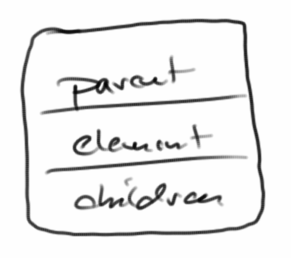Nodes
Die Datenstruktur Node besteht aus folgenden Teilen: es gibt eine Referenz auf das Elternteil, es gibt Referenzen auf mögliche Kinder und es gibt eine Referenz auf das Element, das sind die Daten die im Knoten gespeichert werden. Die Datenstruktur Node unterstützt die folgenden, lesenden Methoden:
- isRoot(): gibt an ob es sich bei dem Knoten um den Wurzelknoten handelt;
- isInternal(): wenn ein Knoten Kinder hat, dann ist es ein interner Knoten;
- isExternal(): wenn ein Knoten keine Kinder hat, dann ist es ein externer Knoten;
- getElement(): gibt das Element zurück, das in diesem Knoten gespeichert ist;
- getParent(): gibt den übergeordneten Knoten dieses Knotens zurück;
- getChildren(): gibt die untergeordneten Knoten dieses Knotens zurück.
Darüber hinaus kann ein Knoten auch Schreibmethoden haben:
- setElement(E element): setzt das Element dieses Knotens auf einen neuen Wert;
- addChild(Node<E> node): fügt diesem Knoten ein Kind hinzu;
- removeChild(Node<E> node): entfernt das gegebene Kind von diesem Knotens, wenn dieses Kind wiederum Kinder hat, werden diese auch mit entfernt!
Mit diesen Methoden können wir Strukturen von Knoten zusammen bauen, in dem wir Information in ihnen speichern und sie dann in einer Struktur verbinden. Als Beispiel wollen wir den Baum der ersten biblischen Familie aufbauen:
Node<String> adam = new Node<String>("Adam");
Node<String> abel = new Node<String>("Abel");
adam.addChild(abel);
Node<String> cain = new Node<String>("Cain");
adam.addChild(cain);
System.out.println(adam.isRoot());
System.out.println(adam.getChildren());
adam.removeChild(abel); // Abel was killed by his brother
.
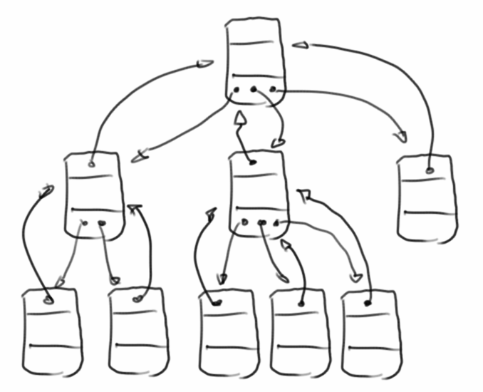Ordered Trees
Wenn wir anfangen Knoten zu verbinden, bekommen wir Bäume. Bäume bestehen aus Knoten. Obwohl wir im Prinzip schon mit einem Haufen von Knoten ganz gut arbeiten könnten, bietet die übergreifende Tree Datenstruktur einige zusätzliche, nützliche Funktionen:
- root(): gibt den Wurzelknoten des Baums zurück;
- size(): gibt die Größe des Baumes, d.h. die Anzahl der Knoten im gesamten Baumes;
- height(): gibt die Höhe eines Baumes;
- elements(): gibt alle Knoten des Baumes als Collection zurück;
- preOrder(): eine Art, einen Baum zu durchqueren;
- postOrder(): eine andere Möglichkeit, einen Baum zu durchlaufen;
- levelOrder(): noch eine andere Art, durch einen Baum zu iterieren.
Diese Methoden sind ganz praktisch wie wir in Kürze sehen werden. Verwendet wird die Datenstruktur wie folgt:
Tree<String> humans = new Tree<String>(adam); System.out.println(humans.size()); System.out.println(humans.elements()); humans.preOrder();
Besonders die Traversal, also die Iterationsmethoden werden für uns sehr wichtig werden. Deswegen betrachten wir diese jetzt ein wenig näher.
.
Pre-Order Traversal
Wenn wir durch alle Elemente eines Baumes iterieren wollen, haben wir mehrere Möglichkeiten, eine davon ist das Pre-Order Traversal. Bei dieser Iteration wird der Knoten selbst vor seinen Kindern besucht.
void preOrder(node) {
visit(node)
for (child of node) {
preOrder(child)
}
}
Mögliche Anwendungen für dieser Art von Traversal sind:
- das Drucken eines strukturierten Dokuments (wie z.B. eines Buchs);
- einen Baum als String auszugeben (z.B. new OrderedTreeParser().createStringFromTree());
- oder einen Baum zu malen (FibonacciTree).
.
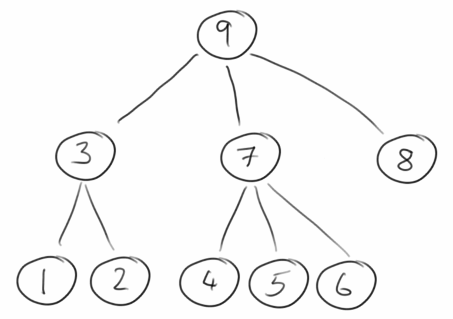Post-Order Traversal
Wenden wir uns der nächsten Form der Iteration zu, dem Post-Order Traversal. In dieser wird der Knoten erst nach seinen Kinder besucht.
void postOrder(node) {
for (child of node) {
postOrder(child)
}
visit(p)
}
Mögliche Anwendungen dieser Art von Durchquerung sind:
- das Berechnen des Speicherplatzes von Dateien in Verzeichnissen und deren Unterverzeichnissen;
- und das Auswerten von arithmetischen Ausdrücken.
.
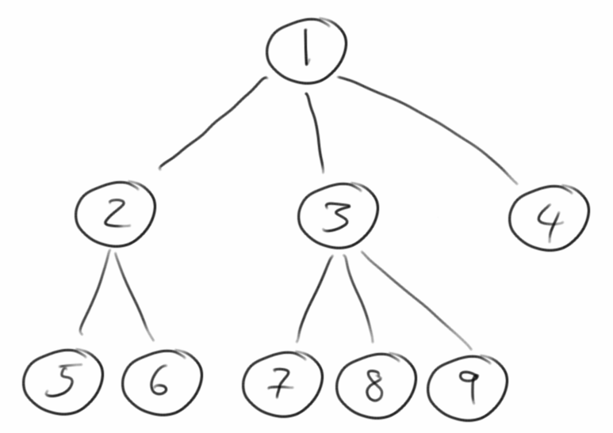Level-Order Traversal
Als letzte wichtige Form der Iteration durch geordente Bäume betrachten wir kurz das Level-Order Traversal. Hier wird zu erst der Wurzelknoten besucht, danach all seine Kinder, dann kommen die Enkelkinder, usw..
void levelOrder(node, level) {
if (node == null) {
return;
} else if (level == 1) {
visit(node);
} else if (level > 1) {
for (child of node) {
levelOrder(child, level - 1);
}
}
}
Diese Art von Traversal wird verwendet
- um z.B. durch einen Baum hierarchisch von oben nach unten durch zu iterieren.
.
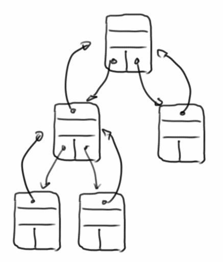Binary Trees
Eine besondere Form von Bäumen sind binäre Bäume:
- Jeder Knoten hat höchstens zwei Kinder und
- die Kinder haben eine Ordnung, d.h. es gibt ein linkes und ein rechtes Kind.
Wenn ein binärer Baum keine oder genau zwei Kinder hat, dann nennt man ihn auch Proper Binary Tree.
Ein binärer Baum, BinaryTree, besteht aus binären Knoten, BinaryNode. Binäre Knoten haben die gleichen Operationen wie normale Knoten, nur zusätzlich haben sie noch folgende Methoden:
- hasLeft(): true, wenn dieser Knoten ein Kind auf der linken Seite hat;
- hasRight(): true, wenn dieser Knoten ein Kind auf der rechten Seite hat;
- getLeft(): gibt das Kind auf der linken Seite dieses Knotens zurück;
- getRight(): gibt das Kind auf der rechten Seite dieses Knotens zurück;
- setLeft(BinaryNode<E> node): fügt ein Kind auf der linken Seite ein;
- setRight(BinaryNode<E> node): fügt ein Kind auf der rechten Seite ein;
- removeLeft(): löscht das Kind auf der linken Seite;
- removeRight(): löscht das Kind auf der rechten Seite.
Zusätzlich zu den Methoden, die für generische Bäume definiert sind, haben binäre Bäume die folgende Operation,
- inOrder(): eine vierte Möglichkeit, einen Baum zu durchqueren, funktioniert aber nur für binäre Bäume.
Um zu sehen, wie wir mit binären Bäumen arbeiten, können wir wieder unsere erste Familie betrachten:
BinaryNode<String> adam = new BinaryNode<String>("Adam");
BinaryNode<String> cain = new BinaryNode<String>("Cain");
cain.setLeft(new BinaryNode<String>("Enoch"));
adam.setLeft(cain);
BinaryNode<String> abel = new BinaryNode<String>("Abel");
adam.setRight(abel);
BinaryTree<String> humans = new BinaryTree<String>(adam);
System.out.println(humans);
System.out.println(humans.size());
System.out.println(humans.height());
humans.inOrder();
Wie wir sehen werden, haben binäre Bäume viele Anwendungen:
- Arithmetische Ausdrücke,
- Entscheidungsprozesse und
- Suchen.
Binäre Bäume sind so wichtig, denn sie haben viele schöne Eigenschaften. Darüber hinaus gibt es einen Satz der besagt, dass alle Bäume in binäre Bäume umgewandelt werden können [16]. Das ist ganz praktisch.
.
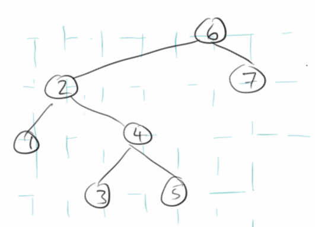In-Order Traversal
Das In-Order Traversal funktioniert nur mit binären Bäumen. Bei ihm wird zuerst die linke Seite besucht, dann wird der Knoten selbst besucht, und danach die rechte Seite. D.h. ein Knoten wird nach seinem linken Teilbaum, aber vor seinem rechten Teilbaum besucht:
void inOrder(p) {
if hasLeft(p) {
inOrder( left(p) );
}
visit(p);
if hasRight(p) {
inOrder( right(p) );
}
}
Mögliche Anwendungen dieser Art von Durchquerung sind:
- Das Drucken arithmetischer Ausdrücke und andere Binärbäume in einer hübschen Form;
- Wenn man mit diesem Traversal binäre Suchbäume durchläuft, werden die Elemente in sortierter Reihenfolge ausgegeben (BinarySearchTree.main()).
.
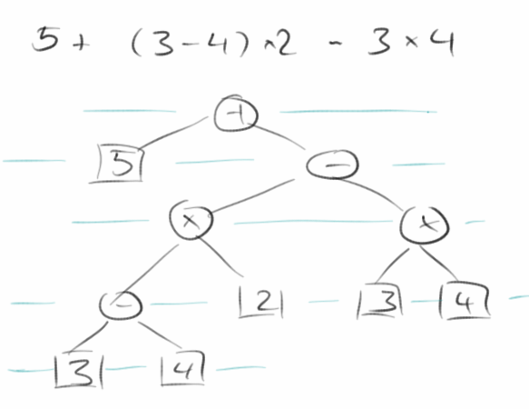Arithmetic Expression Tree
Eine wichtige Anwendung von binären Bäumen ist der arithmetische Ausdruck. Hier repräsentieren interne Knoten Operatoren und externe Knoten entsprechen den Operanden. Zum Beispiel, aus dem Ausdruck
5 + ( 3 - 4 ) * 2 - 3 * 4
wird der binäre Baum rechts. Für arithmetische Ausdrucksbäume haben zwei Arten von Traversals eine besondere Bedeutung:
- Post-Traversal kann verwendet werden, um arithmetische Ausdrücke zu berechnen;
- In-Order-Traversal kann verwendet werden, um arithmetische Ausdrücke schön darzustellen oder zu drucken.
.
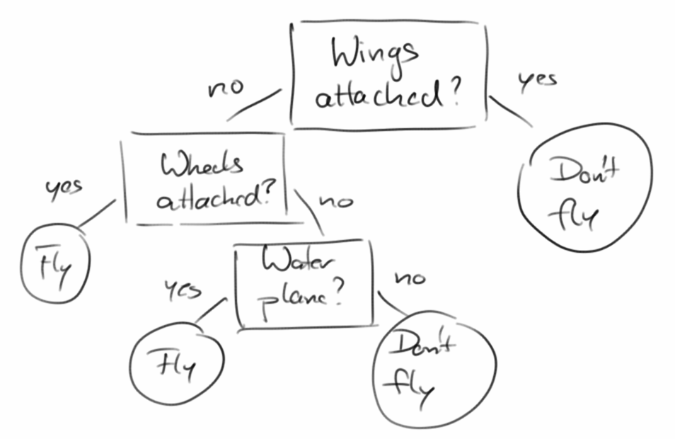Decision Trees
Eine weitere schöne Anwendung eines binären Baumes ist der Entscheidungsbaum [15]. Bei einem Entscheidungsbaum sind interne Knoten Fragen. Bei einer Ja-Antwort folgt man dann der Frage auf der linken Seite, bei einer Nein-Antwort folgt man der Frage auf der rechten Seite. Externe Knoten entsprechen dann den Entscheidungen die zu treffen sind. Beispiele beinhalten:
- Checkliste für ein Flugzeug vor dem Start;
- Was man essen soll;
- Welchen Sortieralgorithmus man verwenden soll;
- Welche Programmiersprache sich für ein bestimmtes Problem am besten eignet.
.
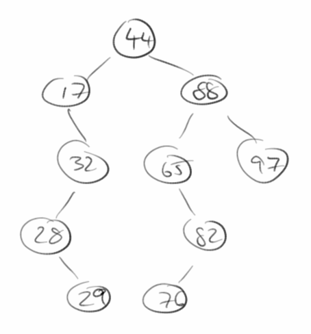Binary Search Trees
Eine sehr prominenten Anwendung von Bäumen ist die der Suche. Der Binary Search Tree ist dabei ein Beispiel das einen binären Baum als Datenstruktur verwendet. Dabei werden:
- interne Knoten verwendet um Einträge zu speichern;
- neue Einträge, je nachdem ob sie größer oder kleiner sind, in den rechten oder linken Teilbaum eingefügt.
Bei dieser Baumart werden die "Blätter", also die externen Knoten, gar nicht genutzt. Betrachten wir folgendes Beispiel:
- Create: Beginnend mit einem leeren Suchbaum, fügen wir nacheinander die folgenden Zahlen ein: 44, 88, 17, 32, 97, 65, 28, 82, 29, 76, 54, 80. Es entsteht der Baum rechts.
- Find: Wir versuchen nach den Einträgen 76 und 25 zu suchen indem wir den Baum von oben nach unten durchgehen. Dabei vergleichen wir unsere Suchzahl, z.B. die 76 jeweils mit dem momentanen Knoten, und folgen der linken Seite wenn unsere Suchzahl größer ist und der rechten Seite wenn sie kleiner ist.
- Insert: Als nächstes fügen wir die Zahl 78 in den Baum ein.
- Remove: Das Entfernen von Elemente ist die schwierigste Operation. Versuchen wir die Zahlen 32 und 65 zu entfernen. Erst müssen wir die Zahl die wir suchen im Baum finden. Wenn die Suchzahl gar nicht im Baum ist dann ist das einfach. Auch wenn die Suchzahl ganz unten ist, dann löschen wir einfach diesen Knoten aus unserem Baum. Wenn unsere Suchzahl allerdings irgendwo mitten im Baum ist, und vielleicht auch linke und rechte Teilbäume unter sich hat, dann wird das etwas schwieriger. Die einfache Lösung ist einfach diese Teilbäume zu nehmen und ganz neu in den Baum einzufügen. Das ist allerdings nicht besonders schnell.
Was die Laufzeiten angeht kann man zeigen, dass das Suchen, Einfügen und Entfernen proportional zur Höhe des Baumes dauert, für einen ausgewogenen (well-balanced) Baum bedeutet dies O(log n).
Es müsste eigentlich klar sein, dass eine der effektivsten Lösungen für das NumberGuessGame nichts anderes als ein binärer Suchbaum ist.
.
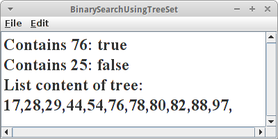TreeSet
Wir können zwar unsere eigene Klasse schreiben um die Binäre Suche umzusetzen (was wir später auch tun werden), aber warum das Rad neu erfinden, wenn es schon jemand anderes erfunden hat? In Java gibt es eine Klasse namens TreeSet. Und die macht genau was wir eigentlich wollen. Hier eine Umsetzung der Aufgabe von gerade eben:
int[] nrs = { 44, 88, 17, 32, 97, 65, 28, 82, 29, 76, 54, 80 };
// create tree and insert
TreeSet<Integer> searchTree = new TreeSet<Integer>();
for (int i = 0; i < nrs.length; i++) {
searchTree.add(nrs[i]);
}
// find the entries: 76 and 25
println("Contains 76: " + searchTree.contains(76));
println("Contains 25: " + searchTree.contains(25));
// insert the number 78
searchTree.add(78);
// remove numbers 32 and 65
searchTree.remove(32);
searchTree.remove(65);
// print whole tree
println("List content of tree: ");
for (Integer nr : searchTree) {
print(nr + ",");
}
Der Vorteil des TreeSets ist, dass seine Einträge sortiert sind. Dabei passiert das Sortieren beim Einfügen neuer Elemente. Wenn wir nach einem Eintrag suchen, dann dauert das O( log n ), ist also langsamer als beim HashSet, dafür ist es aber sortiert. Intern verwendet das TreeSet die Red-BlackTrees als Datenstruktur. Das Gleiche gilt auch für die TreeMap.
.
Other Trees
Wir haben uns bisher nur mit Trees beschäftigt die auf einer Verlinkung der Knoten beruhen. In den Projekten werden wir noch ein Beispiel sehen, das auf Arrays beruht. Es gibt aber noch ganz viele andere Implementierungen für die Tree Datenstruktur, z.B. sind das:
- QuadTrees
- AVL Trees
- Splay Trees
- (2,4) Trees
- Red-Black Trees
- B-Trees
Ähnlich wie bei den Sortierverfahren hat jede so ihre Stärken und Schwächen. Aber was der QuickSort für die Sortieralgorithmen ist, das ist der Red-Black Tree für Bäume.
.
Review
In diesem Kapitel haben wir uns mit Bäumen angefreundet. Dabei haben wir geordnete Bäume und binäre Bäume gesehen und wir haben von den verschiedenen Traversal-Methoden gehört. Und der Binary Search Tree ist uns kurz über den Weg gelaufen.
.
Projekte
Es gibt überraschend viele Anwendungen für Bäume. Sie lassen sich sehr gut dazu verwenden um hierarchische Strukturen abzubilden. Man kann sie für Entscheidungsbäume nutzen. Häufig sind sie das Resultat von Parsern, man kann mit ihnen suchen und sortieren, und sowohl für die Auswertung von arithmetischen Ausdrücken, als auch für Programmiersprachen stellen sie sich als äusserst nützlich heraus.
.
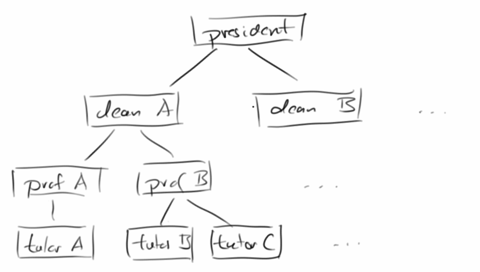University
Mit Bäumen kann man z.B. Hierarchien in Unternehmen abbilden. Nehmen wir eine Hochschule. Dort gibt es einen Präsidenten, für jede Fakultät einen Dekan, und dann gibt es da noch Professoren und Tutoren. Zunächst legen wir für jedes Mitglied der Hierarchie einen Knoten an.
OrderedNode<String> president = new OrderedNode<String>("president");
OrderedNode<String> dean_A = new OrderedNode<String>("dean_A");
OrderedNode<String> dean_B = new OrderedNode<String>("dean_B");
OrderedNode<String> prof_A = new OrderedNode<String>("prof_A");
...
Dann verbinden wir die Knoten miteinander:
dean_A.setParent(president); ... prof_B.setParent(dean_A); ... tutor_B.setParent(prof_B); tutor_C.setParent(prof_B);
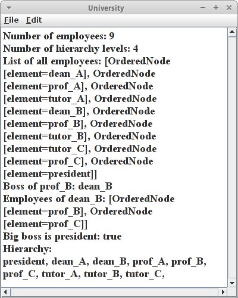Und schließlich machen wir daraus einen Baum:
OrderedTree<String> university = new OrderedTree<String>(president);
An den Baum können wir jetzt ein paar Fragen stellen. Z.B. wieviele Angestellte gibt es an der Uni:
println("Number of employees: " + university.size());
Oder wieviele Hierarchieebenen gibt es:
println("Number of hierarchy levels: " + university.height());
Wir können auch alle Angestellten auflisten die es an der Hochschule gibt:
println("List of all employees: " + university.elements());
Wir können auch fragen, wer der Chef von prof_B ist:
println("Boss of prof_B: " + prof_B.getParent().getElement());
oder wer die Angestellten von dean_B sind:
println("Employees of dean_B: " + dean_B.getChildren());
wobei hier allerdings nur die direkten Kinder aufgelistet werden, die Enkelkinder, sprich Tutoren sind nicht dabei.
Wer der Oberboss ist könnten wir mit der isRoot() Methode herausfinden:
println("Big boss is president: " + president.isRoot());
Wenn wir noch alle Angestellten nach Hierarchieebenen sortiert ausgeben wollen, dann verwenden wir den Level-Order Traversal:
university.levelOrder(new VisitorInterface<String>() {
public void visit(AbstractNode<?> node) {
print(node.getElement() + ", ");
}
});
.
PilotCheckList
Bei Entscheidungsbäumen (decision trees) handelt es sich immer um Binärbäume. Als einfaches Beispiel beginnen wir mit einer Pilotencheckliste, die jeder Pilot durchgehen sollte bevor er abhebt. Zunächst legen wir wieder den Baum an, dieses mal mit Hilfe der BinaryTree und BinaryNode Klassen:
BinaryNode<String> root = new BinaryNode<String>("Wings attached?");
BinaryNode<String> wheels = new BinaryNode<String>("Wheels attached?");
root.setLeft(wheels);
...
BinaryTree<String> decisions = new BinaryTree<String>(root);
Dann folgt der sogenannt "Pilot Walk Through": beginnend von der Wurzel des Baums, gehen wir eine Frage nach der anderen durch, und je nachdem ob der Nutzer mit Ja oder Nein antwortet, navigieren wir durch den Baum nach links oder rechts:
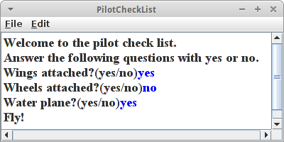.
private void pilotWalkThrough() {
println("Welcome to the pilot check list.");
println("Answer the following questions with yes or no.");
// start with the root:
BinaryNode<String> currentNode = (BinaryNode<String>) decisions.root();
while (currentNode.isInternal()) {
String answer = readLine(currentNode.getElement() + "(yes/no)");
if (answer.equals("yes")) {
currentNode = currentNode.getLeft();
} else {
currentNode = currentNode.getRight();
}
}
println(currentNode.getElement());
}
Am Ende geben wir dann die Empfehlung zu fliegen oder nicht zu fliegen.
.
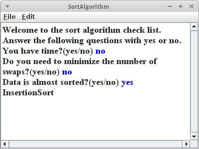SortAlgorithm
Machen wir noch ein weiteres Beispiel für einen Entscheidungsbaum: Eine Empfehlung für die richtige Wahl eines Sortieralgorithmuses. Vor ein oder zwei Kapiteln haben wir folgendes gelernt:
- BubbleSort dauert sehr lange, also nehmen wir es nur, wenn wir viel Zeit haben.
- Wenn wir die Anzahl der Swaps minimieren müssen, dann verwenden wir SelectionSort.
- Wenn unsere Eingabedaten fast sortiert sind, dann ist InsertionSort die beste Wahl.
- Für alles andere verwenden wir QuickSort.
Daraus machen wir jetzt einen Entscheidungsbaum. Allerdings wollen wir dieses Mal einen Parser verwenden, genauer gesagt den BinaryTreeParser:
decisions = new BinaryTreeParser().parseTree(new File("sort_algorithm.txt"));
Der macht aus einer Textdatei einen Baum. Dabei muss die Textdatei aber gewissen Regeln folgen. Hier ist die Datei für unsere Sortieralgorithmen:
You have time? {
BubbleSort,
Do you need to minimize the number of swaps? {
SelectionSort,
Data is almost sorted? {
InsertionSort,
QuickSort
}
}
}
Das Wurzel-Element ist die erste Frage, also "You have time?". Kinder beginnen mit einer geschweiften Klammer '{' und werden danach aufgelistet, mehrere Kinder werden durch Komma ',' getrennt. Bei Binärbäumen kann es höchstens zwei Kinder geben, dabei ist das erste Kind für den Ja-Fall und das zweite Kind für den Nein Fall. Natürlich muss jede geöffnete Klammer wieder geschlossen werden. Der Walk-Through selbst ist komplett identische wie im vorherigen Beispiel.
.
Noch mehr Decision Trees
Man kann aus fast allem Entscheidungsbäume machen. Hier sind ein paar Vorschläge:
- "So You Need A Typeface" von Julian Hansen ist ein Entscheidungsbaum mit dessen Hilfe man die richtige Schriftart für seine Anwendung findet. [1]
- Sollte eine Person einen Kredit bekommen? [2]
- Welche Programmiersprache soll ich für mein Projekt verwenden? [3]
- Für die Datenvisualisierung können wir zwischen Balkendiagramm, Kreisdiagramm, Baumdiagramm, Linienplot, Streudiagramm, etc. wählen. In dem Buch Data Points von Nathan Yau [4] kann man ab Seite 137 Kriterien nachlesen, wie man die passende Visualisierung auswählt. Daraus kann man einen Entscheidungsbaum machen.
- Welche Game-Engine soll ich verwenden? Man könnte Kosten, Lizenz, Support, Anzahl der Projekte, etc. als Kriterien verwenden.
- Was soll ich studieren? Überlegen Sie sich Fragen, die es einem Benutzer helfen zu entscheiden, was er oder sie studieren sollte.
- Sogar Schach kann man als Entscheidungsbaum darstellen. [5]
Man könnte sich auch Fragen überlegen mit denen man z.B. Vögel, Bäume, Tiere, Pflanzen, Krankheiten, usw. klassifizieren könnte. Weiter unten werden wir uns damit beschäftigen wie man Wildbienen identifiziert.
.
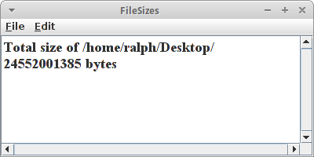FileSizes
Im Kapitel über Rekursion haben wir schon einmal die Summe der Größe aller Dateien in einem Verzeichnis ermittelt. Wir wollen das jetzt noch einmal machen aber dieses mal mit Hilfe eines Baumes. Wir beginnen damit, dass wir die Verzeichnisse rekursiv durchlaufen:
private void buildFileTreeRecursive(OrderedNode<File> node) {
File file = node.getElement();
if (file.listFiles() != null) {
for (File child : file.listFiles()) {
// we are only interested in directories
if (child.isDirectory()) {
OrderedNode<File> newDir = new OrderedNode<File>(child);
node.addChild(newDir);
buildFileTreeRecursive(newDir);
}
}
}
}
Unser OrderedNode<File> enthält dieses Mal Files anstelle von Strings. Das ist ganz praktisch wie wir gleich sehen werden. Diese Methode rufen wir von der createFileTree() Methode auf:
private OrderedTree<File> createFileTree(File startFile) {
OrderedNode<File> directories = new OrderedNode<File>(startFile);
buildFileTreeRecursive(directories);
return new OrderedTree<File>(directories);
}
So jetzt haben wir den Baum, was machen wir damit? Oben beim Post-Order Traversal haben wir gehört, dass man damit die Gesamtgröße aller Dateien in einem Verzeichnis, aber auch jeweils aller seiner Unterverzeichnisse ermitteln kann. Das machen wir jetzt:
OrderedTree<File> fileTree = createFileTree(new File("/home/ralph/"));
fileTree.postOrder(new VisitorInterface<File>() {
@Override
public void visit(AbstractNode<?> node) {
long sizeOfFilesInDir = 0;
File f = (File) node.getElement();
if (f.isDirectory()) {
for (File ff : f.listFiles()) {
if (ff.isFile()) {
sizeOfFilesInDir += ff.length();
}
}
} else {
println("we should never get here!");
}
totalSize += sizeOfFilesInDir;
//println(node +": "+sizeOfFilesInDir);
}
});
Mit der postOrder() Methode gehen wir also den ganzen Baum rekursiv durch. Wir ermitteln also zunächst die Größe von Knoten '1', dann die von '2', danach können wir die von '3' ausrechnen. Das machen wir solange bis wir bei der Wurzel angekommen sind.
.
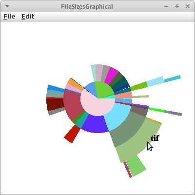FileSizesGraphical
Dass sich die ganze Arbeit lohnen kann, sehen wir jetzt: wir wollen alle Verzeichnisse und ihre Größen in einer Art Kuchendiagramm graphisch darstellen. Im Prinzip haben wir im Projekt FileSizes schon fast alles was wir brauchen. Was fehlt ist, dass wir uns irgendwie merken können was denn die Größe aller Dateien in einem gewissen Unterverzeichnis war. Im Projekt FileSizes haben wir die einfach weggeschmissen. Der Trick ist anstelle der Klasse File eine eigene Klasse zu definieren:
class FileAndSize {
public File file;
public long size;
public FileAndSize(File file, long size) {
this.file = file;
this.size = size;
}
}
Das ist jetzt nicht ganz koscher, weil die Instanzvariablen public sind, da das aber eine lokale Klasse ist, geht das schon in Ordnung. Damit sind die beiden Methoden buildFileTreeRecursive() und createFileTree() vom obigen Beispiel fast identisch, wir müssen lediglich File durch FileAndSize ersetzen und den Konstruktoraufruf durch
OrderedNode<FileAndSize> directories =
new OrderedNode<FileAndSize>(new FileAndSize(startFile, -1));
Wir erhalten dann also einen Tree der aus Verzeichnissen mit ihren jeweiligen Größen besteht:
OrderedTree<FileAndSize> fileTree = createFileTree(new File("/home/ralph/"));
traverseAndDrawArcs(fileTree.root(), 0, 360, 0);
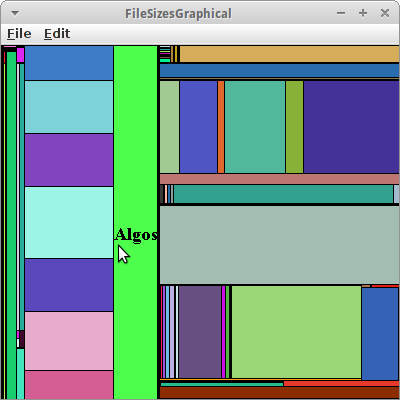Diesen Baum durchlaufen wir jetzt rekursiv und zeichnen GArcs mit einer Breite die jeweils proportional zur Verzeichnisgröße ist. Das geht automatisch von außen nach innen, da es ja ein rekusiver Algorithmus ist.
private void traverseAndDrawArcs(AbstractNode<FileAndSize> tree, double alpha, double sweep, int depth) { // base case if (depth > 8) return; // recursive case depth++; long parentSize = tree.getElement().size; for (AbstractNode<FileAndSize> child : tree.getChildren()) { long childSize = child.getElement().size; double deltaAlpha = sweep * childSize / parentSize; if (deltaAlpha > 1) { traverseAndDrawArcs(child, alpha, deltaAlpha, depth); int radius = depth * DISK_THICKNESS; GArc arc = new GArc(centerX - radius / 2, centerY - radius / 2, radius, radius, alpha, deltaAlpha); arc.setFilled(true); arc.setColor(rgen.nextColor()); add(arc); } alpha += deltaAlpha; } }
Schaut ganz hübsch aus. Man kann das auch mit GRects machen, ist aber nicht ganz so hübsch.
.
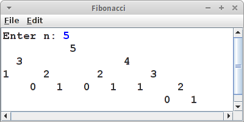Fibonacci
Wir haben ja vor ein paar Kapiteln die Bekanntschaft des Herren Fibonacci gemacht. Das man seine Zahlen auch als Baum darstellen kann wollen wir jetzt zeigen. Wobei das mit dem Baum sehr wörtlich gemeint ist. Der Fibonacci Baum ist ein binärer Baum, und er besteht aus Zahlen, deswegen verwenden wir BinaryNode<Integer> für unsere Knoten als Datentyp. Wir verwenden wieder unsere rekursive Methode fibu() übergeben aber anstelle von Zahlen einen BinaryNode:
private int fibo(BinaryNode<Integer> node) {
int n = node.getElement();
switch (n) {
case 0:
return 0;
case 1:
return 1;
default:
BinaryNode<Integer> left = new BinaryNode<Integer>(n - 2);
node.setLeft(left);
BinaryNode<Integer> right = new BinaryNode<Integer>(n - 1);
node.setRight(right);
return fibo(right) + fibo(left);
}
}
Daraus machen wir dann einen BinaryTree:
BinaryNode<Integer> root = new BinaryNode<Integer>(n); fibo(root); BinaryTree tree = new BinaryTree<Integer>(root);
Wie stellen wir nun den Baum dar? Dafür verwenden wir die Hilfsklasse TreePrinter, die uns ein String Array zurückgibt,
String tmp[][] = new tree.TreePrinter().prettyPrintSimple(tree); printTreeVertical(tmp);
welches wir dann einfach nur noch in unserem ConsoleProgram ausgeben müssen:
private void printTreeVertical(String[][] tmp) {
for (int i = 0; i < tmp.length; i++) { // 4
for (int j = 0; j < tmp[0].length; j++) { // 7
System.out.println();
if (tmp[i][j] != null) {
print(tmp[i][j] + " ");
} else {
print(" ");
}
}
println();
}
}
.
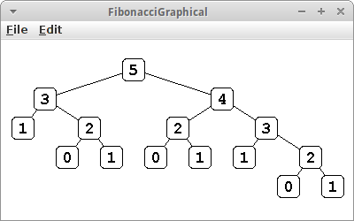FibonacciGraphical
Die Textausgabe von Bäumen, so wie wir es oben gemacht haben ist nicht sehr befriedigend. Viel schöner wäre es wenn man Bäume graphisch ausgeben könnte. Mit dem BinaryTreeDrawerCanvas geht das sogar relativ einfach. Der Code ist fast identisch mit dem obigen. Natürlich muss unser Programm jetzt ein Program sein, also
public class FibonacciGraphical extends Program { ... }
und wir müssen den Baum der BinaryTreeDrawerCanvas Klasse übergeben, die wir dann wie aus dem ersten Semester gewohnt zu unserer UI hinzufügen:
BinaryTree<Integer> tree = new BinaryTree<Integer>(root);
canvas = new BinaryTreeDrawerCanvas(tree);
canvas.setShapeNode(BinaryTreeDrawerCanvas.SHAPE_ROUNDRECT);
canvas.setOrientation(BinaryTreeDrawerCanvas.VERTICAL);
canvas.setEdgeStyle(BinaryTreeDrawerCanvas.EDGE_STYLE_DIRECT);
canvas.setFont("Courier new-bold-18");
add(canvas, CENTER);
Auch wieder viel hübscher.
.
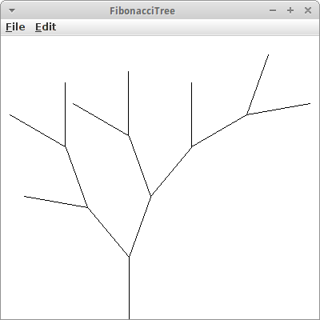FibonacciTree
Dass man mit den Fibonacci Zahlen und dem Pre-Order Traversal wirklich Bäume zeichnen kann, wollen wir jetzt zeigen. Wir verwenden wieder unsere fibu() Methode von oben, um unseren Binärbaum zu erzeugen.
private double len = 80;
private double leftAngle = -40;
private double rightAngle = 20;
public void run() {
int n = 5;
BinaryNode<Integer> root = new BinaryNode<Integer>(n);
fibo(root);
preOrderSimple(root, SIZE/2-40, SIZE-44, -Math.toRadians(90));
}
.
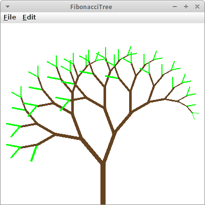Wir haben auch noch drei Instanzvariablen eingeführt, eine für die Länge der "Zweige", eine für den Winkel um den sich die Äste nach links lehnen sollen, und einen Winkel für die rechten Äste. Der Pre-Order Traversal sieht dann wie folgt aus:
private void preOrderSimple(BinaryNode<Integer> node, int x0, int y0, double alpha) {
//visit
GLine line = new GLine(x1, y1, x1 + len * Math.cos(alpha), y1 + len * Math.sin(alpha));
add(line);
x0 += len * Math.cos(alpha);
y0 += len * Math.sin(alpha);
// recurse
if (node.hasLeft()) {
preOrderSimple(node.getLeft(), x0, y0, alpha+Math.toRadians(leftAngle));
}
if (node.hasRight()) {
preOrderSimple(node.getRight(), x0, y0,alpha+Math.toRadians(rightAngle));
}
}
Mit ein paar kleinen Modifikationen wird das dann ganz ansehnlich und man kann sogar eine gewisse Ähnlichkeit mit Bäumen nicht verleugnen.
.
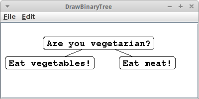DrawBinaryTree
Um Bäume einigermaßen ansprechend darzustellen gibt es die TreeDrawerCanvas und zwar in zwei Versionen, einmal für binären Bäume, BinaryTreeDrawerCanvas, und dann auch für beliebige Bäume, OrderedTreeDrawerCanvas. Verwendet werden beide fast identisch,
public class DrawBinaryTree extends Program {
public void init() {
BinaryTree<String> tree =
new BinaryTreeParser().parseTree(new File("eat.txt"));
BinaryTreeDrawerCanvas canvas = new BinaryTreeDrawerCanvas(tree);
canvas.setNodeSeparationX(98);
add(new JScrollPane(canvas), CENTER);
}
}
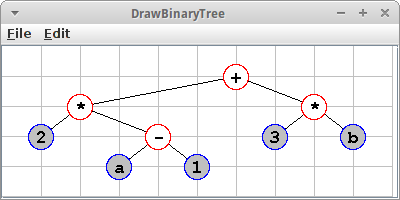Das Beispiel zeigt einen binären Bäum an, der aus der Datei "eat.txt" erzeugt wurde. Wir können verschiedene Parameter variieren, z.B., können wir bei den Shapes wählen zwischen
- SHAPE_OVAL
- SHAPE_RECT
- SHAPE_ROUNDRECT
Ausserdem können wir die Farben der internen und externen Knoten setzen, auch deren Hintergrundfarbe:
canvas.setShapeNode(BinaryTreeDrawerCanvas.SHAPE_OVAL); canvas.setColorExternalNodes(Color.BLUE); canvas.setColorExternalNodesFill(Color.LIGHT_GRAY); canvas.setColorInternalNodes(Color.RED); canvas.setGridOn(true);
Wir können auch ein Hintergrundgitter anzeigen lassen.
.
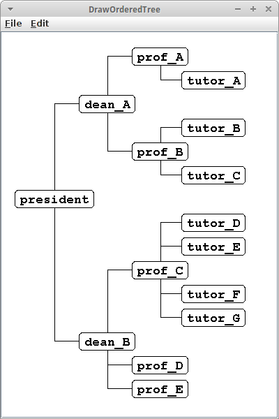DrawOrderedTree
Geordnete Bäume können im Unterschied zu binären Bäume auch mehr als zwei Kinder haben. Ein Beispiel ist unser Hochschulbeispiel vom Anfang des Kapitels. Es macht Sinn diesen Baum von links nach rechts, also horizontal darzustellen. Und für die Verbindungslinien, Edges, haben wir einen anderen Stil gewählt:
canvas.setOrientation(OrderedTreeDrawerCanvas.HORIZONTAL); canvas.setEdgeStyle(OrderedTreeDrawerCanvas.EDGE_STYLE_SQUARE);
.
Wenn wir die Verbindungen zwischen den Knoten lieber mit sogenannten "Quad-Line" Segmenten verbinden möchten,
canvas.setEdgeStyle(OrderedTreeDrawerCanvas.EDGE_STYLE_QUAD);
dann eignet sich das recht gut für die Darstellung von Büchern:
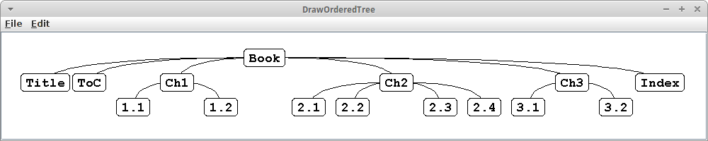
.
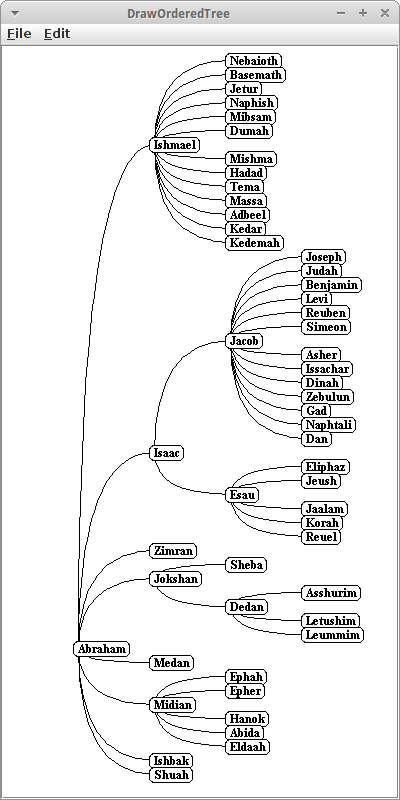Für Genealogien, eignet sich vielleicht wieder die horizontale Auflistung, allerdings machte es hier Sinn, das Alignment anzupassen:
canvas.setOrientation(OrderedTreeDrawerCanvas.HORIZONTAL); canvas.setAlignment(OrderedTreeDrawerCanvas.ALIGN_LEFT); canvas.setEdgeStyle(OrderedTreeDrawerCanvas.EDGE_STYLE_QUAD);
.
Möchte man aber z.B. phylogenetische Beziehungen zwischen Säugetieren darstellen, dann will man nur die externen Knoten darstellen, interne Knoten sollen unsichtbar bleiben. Die Verbindungslinien sollen wieder rechtwinklig sein, und man möchte keine Umrandung sehen.
canvas.setEdgeStyle(OrderedTreeDrawerCanvas.EDGE_STYLE_SQUARE); canvas.setShowInternalNodes(false); canvas.setColorExternalNodes(Color.WHITE);
Das sieht dann so aus:
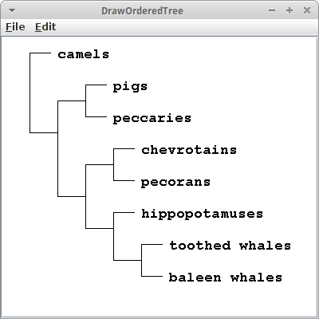
Ich denke das dürfte genügen, um zu sehen, dass wir wahrscheinlich 80% aller Bäume halbwegs o.k. aussehend darstellen können.
.
Traversals
Ein anderes hübsches Beispiel ist es einmal alle different Traversals auszuprobieren. Der folgende Code erlaubt das an einem einfachen Beispiel:
String str = "A{B{C,D},E{F,G,H},I}";
OrderedTree<String> tree = new OrderedTreeParser().parseTree(str);
//tree.levelOrder(new VisitorInterface<String>() {
//tree.postOrder(new VisitorInterface<String>() {
tree.preOrder(new VisitorInterface<String>() {
int counter = 1;
public void visit(AbstractNode<?> node) {
((OrderedNode<String>)node).setElement(""+counter++);
}
});
Die Zahl gibt die Reihenfolge an in der die jeweiligen Knoten besucht wurden, als erstes für Pre-Order, gefolgt von Post-Order und schließlich Level-Order Traversal:
|
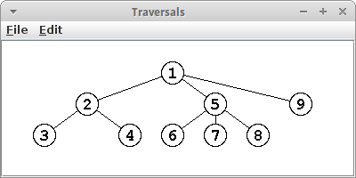 Pre-Order |
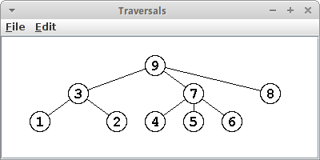 Post-Order |
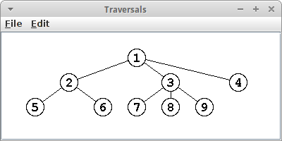 Level-Order |
.
Parsing
In dem SortAlgorithm Projekt haben wir einen Parser verwendet, genauer gesagt den BinaryTreeParser:
decisions = new BinaryTreeParser().parseTree(new File("sort_algorithm.txt"));
Wie funktioniert der? Eigentlich haben wir schon einige Parser selbst geschrieben, denn jedesmal wenn wir den StringTokenizer verwendet haben, haben wir irgendetwas geparst. Schauen wir uns erst einmal an was wir parsen wollen:
Are_you_vegetarian? {
Eat_vegetables!,
Eat_meat!
}
Daraus wollen wir einen Binärbaum parsen. Die Trennzeichen sind die geschweiften Klammer '{' und '}' und das Komma ','. Also verwenden wir
StringTokenizer st = new StringTokenizer(line, "{},", true);
dabei ist das letzte true ganz wichtig, denn es besagt, dass auch die Trennzeichen in Tokens verwandelt werden. Wir schleifen dann einfach durch
while (st.hasMoreTokens()) {
String token = st.nextToken().trim();
if (token.length() > 0) {
...
}
}
und den Rest der Arbeit erledigen wir mit einem switch:
switch (token) {
case "{":
...
break;
case "}":
...
break;
case ",":
...
break;
default:
...
break;
Und das ist das Geheimnis eines Parsers. Die können wir auch selber schreiben.
.
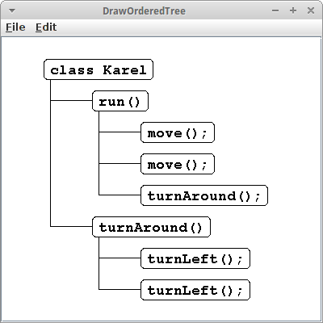Java
Beginnen wir mit unserem ersten Parser, und zwar einen für Java. Wenn wir uns das folgende einfach Java Programm ansehen,
class Karel {
run() {
move();
move();
turnAround();
}
turnAround() {
turnLeft();
turnLeft();
}
}
dann sehen wir, dass das eigentlich ein Baum ist. Der Tokenizer ist der Gleiche wie eben, nur das Komma ersetzen wir durch einen Strichpunkt:
StringTokenizer st = new StringTokenizer(line, "{};", true);
Wir gehen wie oben einen Token nach dem andern durch und müssen uns nur ein bischen überlegen was bei den geschweiften Klammer passieren soll:
switch (token) {
case "{":
classLevel = !classLevel;
break;
case "}":
currentNode = (OrderedNode<String>) currentNode.getParent();
classLevel = !classLevel;
break;
case ";":
break;
default:
if (classLevel ) {
OrderedNode<String> tmp = new OrderedNode<String>(token);
currentNode.addChild(tmp);
currentNode = tmp;
} else {
currentNode.addChild(new OrderedNode<String>(token));
}
break;
}
Wir haben eine lokale Variable classLevel eingeführt, die vor der while Schleife definiert wird:
boolean classLevel = false;
Wenn wir jetzt die erste geschweiften Klammer sehen, dann wird classLevel auf true gesetzt. Im default Zweig heißt das, dass wir es jetzt mit einer neuen Methodendefinition zu tun haben. Wenn wir danach der zweiten geschweiften Klammer begegnen, dann wird classLevel auf false gesetzt, d.h. wir sind jetzt innerhalb einer Methode. Dass bedeutet, dass wir im default Zweig einfach ein Statement nach dem anderen zu unserem currentNode als Kinder hinzufügen. Kommt jetzt eine schließende geschweifte Klammer, dann verlassen wir den Methoden-Modus und sind wieder zurück im Klassen-Modus, also classLevel ist true. Zusätzlich gehen wir aber wieder hoch in unserem Baum, deswegen die Zeile
currentNode = (OrderedNode<String>) currentNode.getParent();
Jetzt kann entweder die nächste Methode kommen, oder wir sind fertig. Das ist jetzt nicht der tollste Parser auf der Welt, aber er zeigt das Prinzip. Und wir sollten nicht vergessen, wir sind erst im zweiten Semester!
Was wir jetzt haben ist ein Abstract Syntax Tree (AST) [6,7]. Das ist super-cool, denn damit könnten wir jetzt entweder
- den Code ausführen oder
- wieder Code erzeugen.
Das zweite hört sich jetzt erst mal bescheuert an: wir haben doch gerade erst aus dem Java den AST gemacht. Wieso sollte jetzt irgend jemand aus dem AST wieder Java machen wollen? Wer hat denn gesagt, dass es Java sein muss? Es könnte fast jede beliebige, objekt-orientierte Sprache sein, z.B. C++, Python oder JavaScript.
Da wir aber nur Java können, machen wir wieder Java daraus. Das geht ganz einfach mit einer abgewandelten Version des Level-Order Traversals:
private String java = "";
private void levelOrder(AbstractNode<String> node, int level) {
if (node == null) {
return;
}
if (level == 2) { // class level
java += node.getElement() + " {\n";
for (AbstractNode<String> child : node.getChildren()) {
levelOrder(child, level - 1);
}
java += "}\n";
} else if (level == 1) { // method level
java += " " + node.getElement() + " {\n";
for (AbstractNode<String> child : node.getChildren()) {
levelOrder(child, level - 1);
}
java += " }\n";
} else if (level == 0) { // statement level
java += " " + node.getElement() + ";\n";
}
}
Wenn wir diese Methode mit unserem AST aufrufen,
String javaCode = levelOrder(tree.root(), 2);
dann kommt da Java raus. Cool, oder?
.
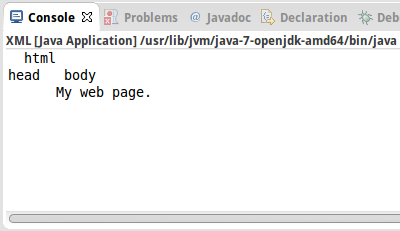XML
Als nächstes wollen wir HTML parsen. HTML, eine spezielle Form von XML, ist nämlich auch ein Baum. Unser einfaches HTML sieht wie folgt aus:
<html> <head> </head> <body> My web page. </body> </html>
Unser Parser müsste also folgende Trennzeichen erkennen: '<', '>' und '/'. Das erledigen wir mit
OrderedNode<String> root = null; OrderedNode<String> currentNode = null; StringTokenizer st = new StringTokenizer(line, "<>/", true);
Wir benötigen wieder die while Schleife und das switch wie oben, das ist einfach. Aber wir müssten irgendwie zwischen den öffnenden Tags, z.B. <body>, und den schließenden Tags, z.B. </body>, unterscheiden können. Das können wir über eine Zustandsvariable state machen,
String state = ""; // "open", "close", "normal"
die in den drei Zuständen "open", "close" oder "normal" sein kann. Zwischen den Zuständen hin- und herschalten tun wir über die Trennzeichen:
switch (token) {
case "<":
state = "open";
break;
case ">":
state = "normal";
break;
case "/":
state = "close";
break;
default:
...
}
Alles was jetzt noch zu tun bleibt, ist im default Zweig den Baum zusammenzubauen. Das geht wieder über einen switch, dieses mal abhängig vom Zustand:
switch (state) {
case "open":
if (root == null) {
root = new OrderedNode<String>(token);
currentNode = root;
} else {
OrderedNode<String> node = new OrderedNode<String>(token);
currentNode.addChild(node);
currentNode = node;
}
break;
case "close":
currentNode = (OrderedNode<String>) currentNode.getParent();
break;
default:
OrderedNode<String> node = new OrderedNode<String>(token);
currentNode.addChild(node);
break;
}
Das war's. Damit wir checken können ob das auch richtig ist, können wir über die Hilfsklasse TreePrinter(),
OrderedTree<String> tree = new OrderedTree<String>(root); new TreePrinter().prettyPrintSimpleVertical(tree);
eine Textversion des Baums auf der Konsole ausgegeben lassen. Eine Anmerkung: wenn wir schon Regular Expressions kennen würden, dann wäre das Parsen von HTML Pipifax. Was wir hier gebaut haben ist unsere erste State-Machine. War doch gar nicht so schwer.
Könnten wir aus dem HTML Baum auch wieder HTML generieren? Wie wäre es mit Level-Order Traversal?
.
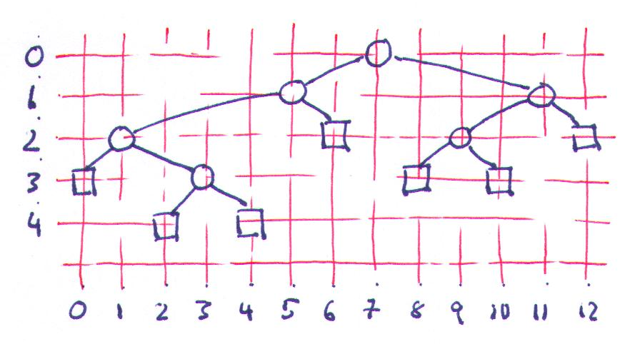ArithmeticExpression
Inzwischen haben wir die Auswertung arithmetischer Ausdrücke schon zweimal gesehen: einmal im Zusammenhang mit der Stack Klasse, und dann im Zusammenhang mit Rekursion. Hier wollen wir das Problem mit einem binären Baum lösen. Dabei geht es uns um drei Dinge:
- einen String wie z.B. "3+(4*5)" zu parsen,
- mittel In-Order Traversal aus dem Baum wieder einen arithmetischer Ausdruck zu machen und
- via Post-Order Traversal den arithmetischen Ausdruck auszuwerten, also zu berechnen.
Parsing
Das Parsen ist der etwas kompliziertere Teil. Wir beginnen mit der Definition eines Stacks der BinaryNodes enthält:
Stack<BinaryNode<String>> stackOfNodes = new Stack<BinaryNode<String>>();
Mit dem StringTokenizer zerlegen wir dann einen Ausdruck wie "3+(4*5)" in seine Einzelteile:
StringTokenizer st = new StringTokenizer(ariExp, " ()+-*/", true);
aus denen wir dann, je nach Token, eine Baumstruktur zusammenbauen:
while (st.hasMoreTokens()) {
String tok = st.nextToken();
switch (tok) {
case "(":
case " ":
// do nothing
break;
case ")":
BinaryNode<String> operand1 = stackOfNodes.pop();
BinaryNode<String> operator = stackOfNodes.pop();
BinaryNode<String> operand2 = stackOfNodes.pop();
operator.setLeft(operand2);
operator.setRight(operand1);
stackOfNodes.push(operator);
break;
default:
BinaryNode<String> node = new BinaryNode<String>(tok.trim());
stackOfNodes.push(node);
break;
}
}
Bei genügenden Klammern sind wir jetzt fertig. Sollten aber nicht genügend Klammern gesetzt worden sein, müssen wir unseren Stack noch etwas aufräumen:
while (stackOfNodes.size() > 1) {
BinaryNode<String> operand1 = stackOfNodes.pop();
BinaryNode<String> operator = stackOfNodes.pop();
BinaryNode<String> operand2 = stackOfNodes.pop();
operator.setLeft(operand2);
operator.setRight(operand1);
stackOfNodes.push(operator);
}
return stackOfNodes.pop();
Das letzte Element auf dem Stack ist unser gesuchter Binärbaum. Es sei angemerkt, dass unser Parser etwas dumm ist, mit Punkt vor Strich hat er es nicht so.
Aus dem binären Baum wieder einen arithmetischer Ausdruck zu machen geht ganz einfach via In-Order Traversal:
printExpression(p) {
if hasLeft(p) {
print("(");
printExpression( left(p) )
}
print( p.element() )
if hasRight(p) {
printExpression( right(p) )
print(")");
}
}
Evaluate
Die Auswertung ist eine abgewandelte Version des Post-Order Traversals. In Pseudo-Code sieht das so aus:
int evaluate(p) {
if isExternal(p) {
return( p.element() )
} else {
x = evaluate( leftChild(p) )
y = evaluate( rightChild(p) )
O <- operator stored at p
return( x O y )
}
}
Erinnern wir uns, in den externen Knoten sind die Zahlen gespeichert, deswegen wenn wir einen externen Knoten haben, geben wir einfach den Wert des Knotens zurück.
Wenn wir einen internen Knoten haben, dann muss es sich um einen Operator handeln, also +, -, * oder /. Zu jedem Operator muss es aber zwei Kinder geben, deswegen besuchen wir erst einmal die Kinder rekursiv, und wenden dann danach (Post) die gewünschte Operation auf die beiden Kinder an. Das war's.
.
SearchBinaryTree
In diesem Projekt wollen wir uns ein bischen mit der binären Suche mit Hilfe eines binären Baumes beschäftigen. Als Suchbeispiel nehmen wir unser Englisch-Deutsches Wörterbuch, dictionary_en_de.txt. Dabei interessieren uns aber nur die deutschen Wörter.
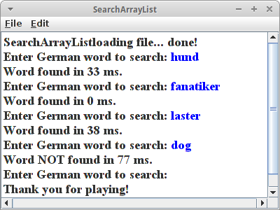SearchArrayList
Zum Aufwärmen verwenden wir eine ganz normale ArrayList. Wir schreiben also eine Klasse SearchArrayList, mit folgender Instanzvariable:
private List<String> al = new ArrayList<String>();
Die befüllen wir in einer loadLexiconFromFile() Methode mit deutschen Wörtern aus dem Wörterbuch:
... StringTokenizer st = new StringTokenizer(words, "="); String en = st.nextToken(); String de = st.nextToken(); al.add(de.toLowerCase().trim());
Und dann benutzen wir die contains() Methode um festzustellen ob ein Wort in der Liste ist oder nicht:
...
boolean found = false;
long startTime = System.currentTimeMillis();
for (int i = 0; i < 10; i++) {
found = al.contains(searchWord.toLowerCase().trim());
}
long endTime = System.currentTimeMillis();
Das Ganze machen wir zehn mal, um aussagekräftige Zeiten zu bekommen. Wir stellen hier fest:
- Im Durchschnitt dauert es so 30 ms um ein Wort zu finden.
- Wörter die am Anfang sind, wie "Fanatiker", werden sehr schnell gefunden.
- Wörter die am Ende sind, wie "Laster", dauern etwas länger.
- Wörter die nicht in der Liste sind dauern auch länger.
Wenn wir uns überlegen wie die Suche in einer Liste funktioniert, ist das genau was wir erwarten.
SearchBinaryTree
Versuchen wir es jetzt zum Vergleich mit einem binären Suchbaum. Für den Baum brauchen wir einen Knoten, wir nennen ihn SearchBinaryNode, der folgende Attribute haben soll:
public class SearchBinaryNode<E> {
private SearchBinaryNode<E> leftChild;
private SearchBinaryNode<E> rightChild;
private E element;
// constructor and methods...
}
Damit der Knoten nützlich ist, müssen wir folgende Methoden implementieren:
- SearchBinaryNode(E element)
- E getElement()
- boolean hasLeft()
- boolean hasRight()
- SearchBinaryNode<E> getLeft()
- SearchBinaryNode<E> getRight()
- setLeft(SearchBinaryNode<E> child)
- setRight(SearchBinaryNode<E> child)
Die Namen der Methoden sind ziemlich selbsterklärend. Wir können die jetzt schnell implementieren, oder wir verwenden die tree.BinaryNode Klasse.
Die eigentliche Suche implementieren wir dann in der Klasse SearchBinaryTree. Wir benötigen wieder eine loadLexiconFromFile() Methode. In der rufen wir eine Methode add() auf die wir schreiben müssen:
public void add(String word) {
if (root == null) {
root = new SearchBinaryNode<String>(word);
} else {
SearchBinaryNode<String> current = root;
// first find if word is already in tree
// insert element if not already in tree
}
}
Für die Suche müssen wir noch eine contains() Methode schreiben:
public boolean contains(String word) {
SearchBinaryNode<String> current = root;
while (true) { // loop and a half
String x = current.getElement();
int comparison = x.compareTo(word);
if (comparison == 0) {
// we found it
return true;
} else if (comparison > 0) {
// go to right
...
} else {
// go to left
...
}
}
return false;
}
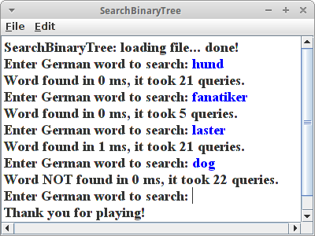Wieder machen wir die Suche zehn mal, um aussagekräftige Zeiten zu bekommen. Wir stellen hier fest:
- Im Durchschnitt dauert es so 0 ms um ein Wort zu finden.
- Es macht keinen Unterschied ob Wörter am Anfang oder am Ende sind, oder überhaupt in der Liste.
Interessant ist auch wieviele Vergleiche notwendig sind: bei unserem Tree sind das im Schnitt so zwischen 5 bis 22 Vergleiche um ein Wort zu finden. Bei der Liste sind das viel mehr: wenn ein Wort am Ende der Liste ist benötigen wir ca. 100000 Vergleiche! Da ist er wieder unser Freund der Logarithmus!
Wir sehen also, dass Bäume unsere Freunde sind. Allerdings ein Wort der Vorsicht: was passiert wenn wir unser Programm mit den englischen Wörter ausprobieren? Da die Wörter in der Datei dictionary_en_de.txt alphabetisch sortiert sind, führt das dazu, dass unser Baum nicht mehr symmetrisch ist. Was wiederum dazu führt, das unsere Suche langsamer wird. Im schlimmsten Fall genauso langsam wie mit der Liste. Um dieses Problem, der "unbalanced trees" zu vermeiden gibt es ganz viel Forschung, und deswegen gibt es auch so viele verschieden Baumarten, Red-Black Trees wären z.B. eine gute Wahl.
.
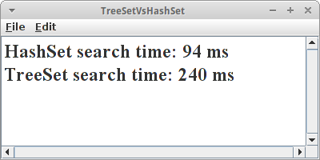TreeSetVsHashSet
Der Vorteil des TreeSet ist, dass es sortiert ist, der des HashSets, dass es schneller ist. Um genau zu sein, sowohl Einfügen als auch Suchen ist logarithmisch beim TreeSet, O(log n), während es beim HashSet konstant ist, O(1). Wir können das mit einem kleinen Programm messen (ähnlich wie bei ArrayListVsLinkedList). Wichtig ist allerdings, dass wir nicht nur eine Zahl in die Sets einfügen, sondern viele verschiedene, zufällige.
for (int i = 0; i < 10000000; i++) {
int randomPos = (int) (100000.0 * Math.random());
set.add(randomPos);
}
Danach messen wir dann die Zeit die benötigt wird um zu testen ob eine beliebige Zahl in dem Set enthalten ist:
long start = System.currentTimeMillis();
for (int i = 0; i < 1000000; i++) {
// read an element at a random position:
int randomPos = (int) (100000.0 * Math.random());
st.contains(randomPos);
}
long end = System.currentTimeMillis();
System.out.println(end - start);
Das tun wir einmal für eine HashSet und einmal für eine TreeSet.
.
Challenges
.
Wildbienen in Deutschland
Den 560 Wildbienenarten in Deutschland geht es nicht so gut, deswegen sollen wir ein Programm schreiben, dass es ermöglicht sieben der häufiger vorkommenden Wildbienen zu identifizieren. Dazu müssen wir erst einmal den Flyer "WILDBIENEN" der Initiative "Deutschland summt!" herunterladen [8]. Auf Seite 5 dieses Flyers sehen Sie eine Tabelle mit dem Namen "Wildbienen bestimmen - leicht gemacht!". Daraus machen wir einen Entscheidungsbaum.
1. Schritt: Entscheidungsbaum (Decision Tree)
Machen Sie aus dieser Tabelle einen Entscheidungsbaum (decision tree), am einfachsten malen Sie sich diesen auf einem Stück Papier auf. Achten Sie darauf, dass es ein Binärbaum ist, mit Ja/Nein (yes/no) Entscheidungen.
2. Schritt: Erstellung des Programms
Orientieren Sie sich am Beispiel "PilotCheckList", das demonstriert wie ein Entscheidungsbaum befüllt wird, wie man diesen auf der Konsole ausgibt (printTreeNicely), und wie man damit eine Benutzerbefragung durchführt (pilotWalkThrough). Versuchen Sie diesen Code zu verstehen und dann in der Klasse WildBienen ein Bestimmungsprogram für WildBienen zu schreiben.
.
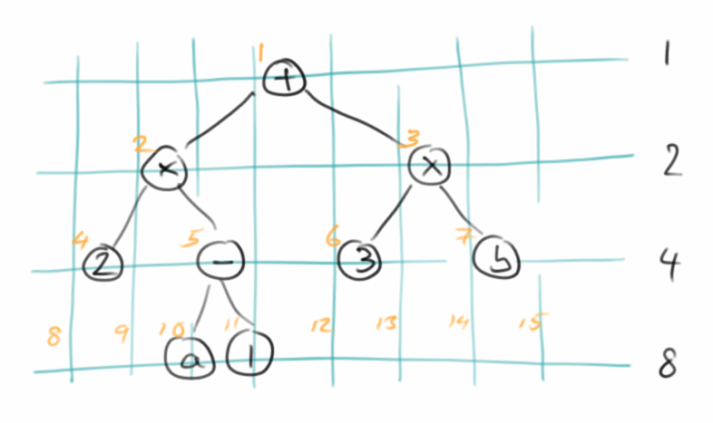Array based BinaryTree
Unsere Implementierung für den BinaryTree verwendet eine Linked Binary Tree Struktur. Man kann BinaryTrees aber auch mit einem Array bzw. einer ArrayList abbilden. Dazu muss man sich lediglich die Skizze rechts ansehen. Dann erkennt man, dass es in jeder Generation n maximal 2n Knoten geben kann. Ausserdem erkennt man, dass man die Positionen der möglichen Kinder vorhersagen kann. Das ist alles was man braucht um die Datenstruktur umzusetzen.
.
Game Trees and Tic-Tac-Toe
Zunächst lesen wir den Artikel in der Wikipedia bzgl Game Trees [9]. Danach sollten wir uns den noch interessanteren Artikel von Victor S.Adamchik zum gleichen Thema ansehen [10]. Mit der Information, kann man sich jetzt überlegen wie man einen Game Tree für das Spiel Tic-Tac-Toe schreibt.
.
.
Research
Auch in diesem Kapitel kann man wieder ein bischen was erforschen.
.
Visualization
Mit Jason Park's Algorithm Visualizer [11] lassen sich die verschiedensten Algorithmen und auch Datenstrukturen sehr schön visualisieren. Wir sollten uns mal die Beispiele zu Bäumen ansehen.
.
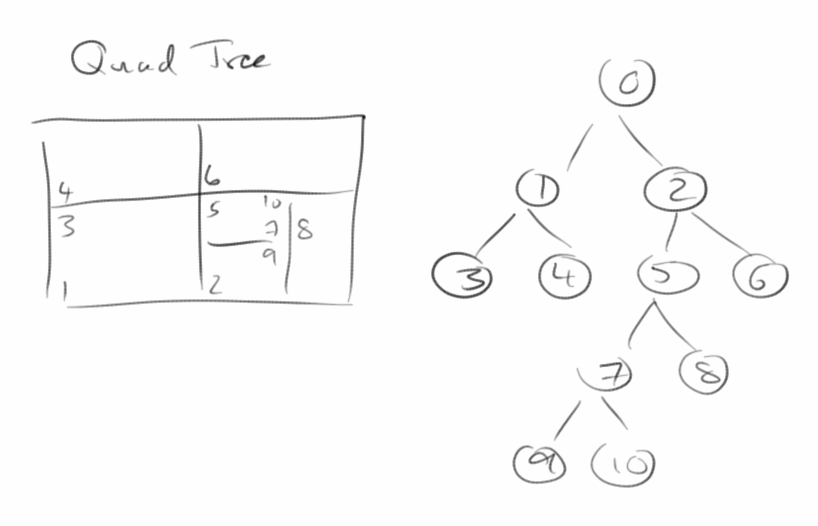QuadTree
In vielen Spielen hat man es sehr häufig mit Kollisionserkennung zu tun. Z.B. in unserem Asteroids Spiel aus dem ersten Semester geht es darum Kollisionen mit Asteroiden zu erkennen. Aber auch im Agrar Beispiel ist Kollisionserkennung ganz wichtig. Vor allem bei sehr vielen Objekten kann das dazu führen dass unser Program super-langsam wird, wenn wir nicht die richtige Datenstruktur verwenden. In zwei Dimensionen ist das der QuadTree [12], in drei der Octree [13]. Auch k-d Trees [14] werden in diesem Zusammenhang oft eingesetzt. Wir wollen uns ein bischen inn die Materie einlesen.
.
Other Trees
Wie bereits angedeutet gibt es noch ganz viele andere Bäume. Z.B. sind da:
- AVL Trees
- Splay Trees
- (2,4) Trees
- Red-Black Trees
- B-Trees
Wir sollten uns mal zu all den Bäumen schlau machen, vor allem aber den Red-Black Trees und den AVL Trees.
Eine interessante Frage ist z.B., wann sollten wir einen Red-Black Tree, wann einen AVL Tree und wann eine B-Tree verwenden?
- Red-Black Trees und AVL Trees sind binäre Bäume, B-Trees hingegen können mehr als zwei Kinder pro Zweig haben, sind also nicht so tief.
- Red-Black Trees nehmen es mit dem Re-Balancing nicht so ernst, was Inserts und Deletes schneller sein lässt.
- AVL Trees sind etwas genauer mit dem Re-Balancing, was dazu führt, dass sie schneller beim Lesen sind.
.
Fragen
-
Zeichnen Sie einen einfachen Baum. An diesem Beispiel zeigen Sie die folgende Begriffe:
- Root
- Internal Node
- External Node
- Ancestors
- Descendants
-
Subtree
-
Ist der Post-Order Traversal Algorithmus ein rekursiver Algorithmus?
-
Betrachten Sie den folgenden Baum und betrachten Sie den Knoten 'B':
- Was sind seine Ancestors?
- Was sind seine Descendants?
- Was ist die Depth des Knotens B?
-
Was ist die Height des Baums?
-
Was ist der Unterschied zwischen einem binären Baum und einem gewöhnlichen Baum?
-
Erklären Sie den Unterschied zwischen Pre-Order Traversal und Post-Order Traversal eines Baumes.
-
Betrachten Sie den folgenden arithmetischen Ausdruck und zeichnen Sie den dazu gehörigen binären Baum.
- (2 * (a - 1) + (3 * b))
- (4 - (x - 1)) + (2 * y)
- ( 6 – 3 ) * ( 4 % 5 ) + 6 )
-
3 * ( ( 4 % 5 ) * ( 6 – 3 ) )
-
Zeichnen Sie den binären Suchbaum, der aus dem Einfügen der folgenden zehn Zahlen resultiert:
- {16, 24, 8, 30, 42, 25, 1, 9, 18, 29}.
- {24, 8, 16, 30, 1, 9, 42, 25, 18, 29}.
- {29, 18, 25, 42, 9, 1, 30, 16, 8, 24}.
.
Referenzen
Referenzen kommen und gehen. Hoffen wir, dass die hier etwas länger halten. Leider scheint der Website zum Buch "Data Structures and Algorithms" von Bruno R. Preiss im Moment nicht mehr erreichbar zu sein. Das Buch gibt's aber noch, hab's sofort gebraucht gekauft.
[1] So You Need A Typeface von Julian Hansen, www.julianhansen.com/#/zimmer/
[2] Introduction of Decision Trees, Bill Wilson, http://www.cse.unsw.edu.au/~billw/cs9414/notes/ml/06prop/id3/id3.html
[3] Choosing a programming language, Brett Slatkin, www.onebigfluke.com/2016/01/choosing-a-programming-language.html
[4] Data Points: Visualization That Means Something, Nathan Yau, John Wiley & Sons, 2013
[5] Tree for chess, https://c1.staticflickr.com/5/4017/4391267493_ab44e3f827_b.jpg
{kind=link}
[6] Abstract syntax tree, https://en.wikipedia.org/wiki/Abstract_syntax_tree
[7] CSE 2231: Software II: Software Development and Design, http://web.cse.ohio-state.edu/software/2231/web-sw2/extras/slide/21.Abstract-Syntax-Trees.pdf
[8] WILDBIENEN, Initiative "Deutschland summt!", http://www.deutschland-summt.de/?file=files/media_ds/pdfs/2017/Wildbienen_Folder_23-03-2017.pdf
[9] Game tree, https://en.wikipedia.org/w/index.php?title=Game_tree&oldid=740804477 (last visited Feb. 23, 2017).
[10] Game Trees, Victor S.Adamchik, www.cs.cmu.edu/~adamchik/15-121/lectures/Game%20Trees/Game%20Trees.html
[11] Algorithm Visualizer, Jason Park, http://algo-visualizer.jasonpark.me/
[12] Why algorithms matter. Quad tree example, javaprogrammernotes.blogspot.de/2015/01/why-algorithms-matter-quad-tree-example.html
[13] Octree, https://en.wikipedia.org/wiki/Octree
[14] k-d tree, https://en.wikipedia.org/wiki/K-d_tree
[15] Decision tree, https://en.wikipedia.org/wiki/Decision_tree
[16] Encoding general trees as binary trees, en.wikipedia.org/wiki/Binary_tree
[17] Abraham's family tree, https://en.wikipedia.org/wiki/Abraham%27s_family_tree
[18] Data Structures and Algorithms with Object-Oriented Design Patterns in Java by Bruno R. Preiss
.